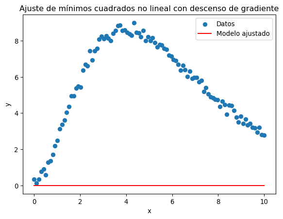
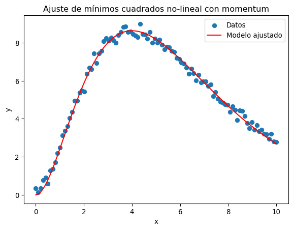

import jax.numpy as jnp
#Crear arrays
x = jnp.array([1, 2, 3])
y = jnp.array([4, 5, 6])Decenso de Gradiente
En esta clase discutiremos uno de los algoritmos de optimización más usados actualmente: El descenso de gradiente.
Este algoritmo se usa con éxito para ajustar modelos con billones de parámetros.
Nosotros, más humildemente, lo usaremos para hacer un ajuste de mínimos cuadrados.
Para lograrlo, usaremos una de las librerías más usadas actualmente: JAX.
Introducción a JAX
JAX es una librería de python para cálculo de alto desempeño, usando CPU, GPU, o TPU. Tiene soporte para autodiferenciación así como compilación de código para hacerlo más rápido.
Ventajas de JAX
Compatibilidad con Numpy: Tiene varias funciones similares a las de Numpy con la misma sintaxis. Para usarlas se importa
jax.numpy.Diferenciación automática: Puede calcular el gradiente de funciones de python arbitrarias usando
grad.Compilación justo a tiempo (JIT): El código de python es lento porque es interpretado. JAX permite compilar código para hacerlo más rápido.
Soporte de GPU: Permite realizar algunos cálculos en la GPU para mayor eficiencia.
Trabajando con arrays de JAX
#Sumar arrays
z = x + y
print(z)[5 7 9]#Producto punto
a = jnp.dot(x, y)
print(a)32Así mismo, muchas de las cosas que hace numpy con sus arrays se pueden hacer con JAX, cambiando np por jnp.
Diferenciación automática con grad
import jax
#Defina una función
def f(x):
return x**2 + 2*x + 1
#Calcule la derivada
df_dx = jax.grad(f)df_dx(3.0)Array(8., dtype=float32, weak_type=True)También podemos calcular gradientes de funciones de varios parámetros:
def g(x, y):
return x**2 + y**2 + x*y
grad_g = jax.grad(g, argnums=(0,1))
grad_x, grad_y = grad_g(3.0, 4.0)
print(grad_x, grad_y)10.0 11.0Acelerar código con JIT
def f(x):
return jnp.sin(x) + jnp.cos(x)
f_jit = jax.jit(f)import time
x = jnp.linspace(0, 10, 100_000_000)# Se necesita ejecutar la función una vez para obligarla a compilar
f_jit(x)Array([ 1. , 1.0000001, 1.0000002, ..., -1.3830926, -1.3830926,
-1.3830926], dtype=float32)# Sin JIT
start = time.time()
f(x)
print(f"Sin JIT: {time.time() - start}")Sin JIT: 0.6554825305938721# Con JIT
start = time.time()
f_jit(x)
print(f"Con JIT: {time.time() - start}")Con JIT: 0.0010113716125488281Nota: Esta no es la manera más precisa para medir tiempos. Es sólo para ilustrar que el código compilado es más rápido.
Descenso de gradiente
Este algoritmo busca el mínimo de una función de muchas variables. La idea es sencilla: La dirección del gradiente es la dirección en la cual la función cambia más rápidamente, entonces seguimos la dirección del gradiente. Si \(\vec{\theta}\) son los muchos parámetros, cambiamos el punto donde evaluamos la función de la siguiente manera a cada paso
\[ \vec{\theta}_{i + 1} = \vec{\theta}_i - \eta \nabla f(\vec{\theta}_i)\,. \]
El parámetro \(\eta\) se llama “razón de aprendizaje” (learning rate) porque este algoritmo se usa mucho en métodos de aprendizaje automático.
Nosotros lo aplicaremos en esta clase a un problema sencillo. Queremos ajustar una curva no lineal a unos datos con ruido. Para lograrlo aplicaremos el método de mínimos cuadrados de la clase pasada.
Vimos que si los parámetros de ajuste aparecen de forma lineal, basta resolver un sistema de ecuaciones. Cuando aparecen de forma no lineal tenemos que encontrar el mínimo de la suma de las desviaciones al cuadrado de alguna otra manera. Lo haremos con descenso de gradiente, donde nuestra función a minimizar es
\[ f(\vec{\theta}) = \sum_i (\hat{y}_{\vec{\theta}}(x_i)) - y_i)^2\,, \]
donde \(\hat{y}_{\vec{\theta}}\) es la función de ajuste que depende de los parámetros.
Los datos que vamos a ajustar vienen de una función no-lineal:
\[ y(x) = e^{-x/2}\,. \]
Creamos datos ficticios con un ruido:
import numpy as np
# Generar datos ficticios
np.random.seed(0)
x_data = np.linspace(0, 10, 100)
y_true = np.exp(-0.5 * x_data) # True model parameters
y_data = y_true + np.random.normal(0, 0.1, size=x_data.shape) # Add noiseEl modelo que queremos ajustar es
\[ \hat{y}_{\vec{\theta}}(x) = \theta_0e^{-\theta_1 x}\,. \]
def modelo(x, theta):
return theta[0]*jnp.exp(-theta[1]*x)Minimización
Definimos primero la función a minimizar:
def suma_cuadrados(theta, x, y):
predicciones = modelo(x, theta)
return jnp.sum((y - predicciones)**2)El siguiente es un algoritmo sencillo de minimización por descenso de gradiente:
gradiente = jax.grad(suma_cuadrados)
def gradient_descent(theta, x, y, learning_rate=0.01, iterations=1000):
for i in range(iterations):
gradients = gradiente(theta, x, y)
theta = theta - learning_rate * gradients
# Imprimimos el resultado cada 100 iteraciones
if i % 100 == 0:
loss = suma_cuadrados(theta, x, y)
print(f"Iteración {i}, Suma cuadrados: {loss}")
return theta# Parámetros iniciales
theta_init = jnp.array([1.0, 1.0, 1.0])
# Descenso de gradiente
theta_opt = gradient_descent(theta_init, x_data, y_data, learning_rate=0.001, iterations=3000)
# Parámetros encontrados
print("Parámetros optimizados:", theta_opt)Iteración 0, Suma cuadrados: 2.8259427547454834
Iteración 100, Suma cuadrados: 0.9898320436477661
Iteración 200, Suma cuadrados: 0.9269558191299438
Iteración 300, Suma cuadrados: 0.9178450703620911
Iteración 400, Suma cuadrados: 0.9157513976097107
Iteración 500, Suma cuadrados: 0.9152856469154358
Iteración 600, Suma cuadrados: 0.9151836037635803
Iteración 700, Suma cuadrados: 0.9151614308357239
Iteración 800, Suma cuadrados: 0.9151566028594971
Iteración 900, Suma cuadrados: 0.9151556491851807
Iteración 1000, Suma cuadrados: 0.9151554107666016
Iteración 1100, Suma cuadrados: 0.915155291557312
Iteración 1200, Suma cuadrados: 0.915155291557312
Iteración 1300, Suma cuadrados: 0.915155291557312
Iteración 1400, Suma cuadrados: 0.915155291557312
Iteración 1500, Suma cuadrados: 0.915155291557312
Iteración 1600, Suma cuadrados: 0.915155291557312
Iteración 1700, Suma cuadrados: 0.915155291557312
Iteración 1800, Suma cuadrados: 0.915155291557312
Iteración 1900, Suma cuadrados: 0.915155291557312
Iteración 2000, Suma cuadrados: 0.915155291557312
Iteración 2100, Suma cuadrados: 0.915155291557312
Iteración 2200, Suma cuadrados: 0.915155291557312
Iteración 2300, Suma cuadrados: 0.915155291557312
Iteración 2400, Suma cuadrados: 0.915155291557312
Iteración 2500, Suma cuadrados: 0.915155291557312
Iteración 2600, Suma cuadrados: 0.915155291557312
Iteración 2700, Suma cuadrados: 0.915155291557312
Iteración 2800, Suma cuadrados: 0.915155291557312
Iteración 2900, Suma cuadrados: 0.915155291557312
Parámetros optimizados: [1.1409745 0.56464535 1. ]import matplotlib.pyplot as plt
plt.scatter(x_data, y_data, label="Datos")
plt.plot(x_data, modelo(x_data, theta_opt), color="red", label="Modelo ajustado")
plt.legend()
plt.xlabel('x')
plt.ylabel('y')
plt.title('Ajuste de mínimos cuadrados no lineal con descenso de gradiente')
plt.show()
Mejoras al descenso de gradiente
El algoritmo de descenso de gradiente visto arriba no funciona bien para muchos casos. Discutiremos algunas de las maneras de mejorarlo.
Para estos ejemplos usemos los siguientes datos:
\[ y(x) = (\theta_0 x)^2 e^{\theta_1 x} \]
# Generar datos ficticios
np.random.seed(0)
x_data = np.linspace(0, 10, 100)
y_true = (2*x_data)**2*np.exp(-x_data/2)
y_data = y_true + np.random.normal(0, 0.2, size=x_data.shape)
def modelo(x, theta):
return (theta[0]*x)**2*jnp.exp(-theta[1]*x)
def suma_cuadrados(theta, x, y):
predicciones = modelo(x, theta)
return jnp.sum((y - predicciones)**2)
gradiente = jax.grad(suma_cuadrados)
def gradient_descent(theta, x, y, learning_rate=0.01, iterations=1000):
for i in range(iterations):
gradients = gradiente(theta, x, y)
theta = theta - learning_rate * gradients
# Imprimimos el resultado cada 100 iteraciones
if i % 100 == 0:
loss = suma_cuadrados(theta, x, y)
print(f"Iteración {i}, Suma cuadrados: {loss}")
return theta
# Parámetros iniciales
theta_init = jnp.array([1.0, 1.0])
# Descenso de gradiente
theta_opt = gradient_descent(theta_init, x_data, y_data, learning_rate=0.001, iterations=3000)
# Parámetros encontrados
print("Parámetros optimizados:", theta_opt)Iteración 0, Suma cuadrados: 21042.046875
Iteración 100, Suma cuadrados: 3676.298583984375
Iteración 200, Suma cuadrados: 3676.298583984375
Iteración 300, Suma cuadrados: 3676.298583984375
Iteración 400, Suma cuadrados: 3676.298583984375
Iteración 500, Suma cuadrados: 3676.298583984375
Iteración 600, Suma cuadrados: 3676.298583984375
Iteración 700, Suma cuadrados: 3676.298583984375
Iteración 800, Suma cuadrados: 3676.298583984375
Iteración 900, Suma cuadrados: 3676.298583984375
Iteración 1000, Suma cuadrados: 3676.298583984375
Iteración 1100, Suma cuadrados: 3676.298583984375
Iteración 1200, Suma cuadrados: 3676.298583984375
Iteración 1300, Suma cuadrados: 3676.298583984375
Iteración 1400, Suma cuadrados: 3676.298583984375
Iteración 1500, Suma cuadrados: 3676.298583984375
Iteración 1600, Suma cuadrados: 3676.298583984375
Iteración 1700, Suma cuadrados: 3676.298583984375
Iteración 1800, Suma cuadrados: 3676.298583984375
Iteración 1900, Suma cuadrados: 3676.298583984375
Iteración 2000, Suma cuadrados: 3676.298583984375
Iteración 2100, Suma cuadrados: 3676.298583984375
Iteración 2200, Suma cuadrados: 3676.298583984375
Iteración 2300, Suma cuadrados: 3676.298583984375
Iteración 2400, Suma cuadrados: 3676.298583984375
Iteración 2500, Suma cuadrados: 3676.298583984375
Iteración 2600, Suma cuadrados: 3676.298583984375
Iteración 2700, Suma cuadrados: 3676.298583984375
Iteración 2800, Suma cuadrados: 3676.298583984375
Iteración 2900, Suma cuadrados: 3676.298583984375
Parámetros optimizados: [-72.194016 414.01147 ]plt.scatter(x_data, y_data, label="Datos")
plt.plot(x_data, modelo(x_data, theta_opt), color="red", label="Modelo ajustado")
plt.legend()
plt.xlabel('x')
plt.ylabel('y')
plt.title('Ajuste de mínimos cuadrados no lineal con descenso de gradiente')
plt.show()
Para ver lo que ocurre, grafiquemos la función de pérdida
Momentum
Cuando se minimizan funciones de varias dimensiones, con frecuencia tienen múltiples mínimos locales.
El descenso de gradiente mostrado arriba se quedará atascado en esos mínimos locales.
Para evitarlo, podemos imaginar una bolita que rueda por una pendiente. Esta no se atasca en pequeños huecos porque su momentum la ayuda a continuar. Podemos agregarle también un momentum a la velocidad del descenso de gradiente:
\[ \vec{m}_{t+1} = \beta\vec{m}_t - \eta \nabla f(\vec{\theta_t})\,, \] \[ \vec{\theta}_{t+1} = \vec{\theta}_t + \vec{m}_{t+1}\,. \]
Escribamos un código que lo implemente en JAX
def gradient_descent_momentum(theta, x, y, learning_rate=0.001, momentum=0.9, iterations=1000):
velocity = jnp.zeros_like(theta) # Inicializar el término de velocidad
for i in range(iterations):
gradients = gradiente(theta, x, y)
velocity = momentum * velocity - learning_rate * gradients
theta = theta + velocity
if i % 100 == 0:
loss = suma_cuadrados(theta, x, y)
print(f"Iteración {i}, Suma cuadrados: {loss}")
return theta# Parámetros iniciales
theta_init = jnp.array([1.0, 1.0])
# Descenso de gradiente
theta_opt = gradient_descent_momentum(theta_init, x_data, y_data, learning_rate=0.001, iterations=3000)
# Parámetros encontrados
print("Parámetros optimizados:", theta_opt)
plt.scatter(x_data, y_data, label="Datos")
plt.plot(x_data, modelo(x_data, theta_opt), color="red", label="Modelo ajustado")
plt.legend()
plt.xlabel('x')
plt.ylabel('y')
plt.title('Ajuste de mínimos cuadrados no-lineal con momentum')
plt.show()Iteración 0, Suma cuadrados: 21042.046875
Iteración 100, Suma cuadrados: 3676.298583984375
Iteración 200, Suma cuadrados: 3676.298583984375
Iteración 300, Suma cuadrados: 3676.298583984375
Iteración 400, Suma cuadrados: 3676.298583984375
Iteración 500, Suma cuadrados: 3676.298583984375
Iteración 600, Suma cuadrados: 3676.298583984375
Iteración 700, Suma cuadrados: 3676.298583984375
Iteración 800, Suma cuadrados: 3676.298583984375
Iteración 900, Suma cuadrados: 3676.298583984375
Iteración 1000, Suma cuadrados: 3676.298583984375
Iteración 1100, Suma cuadrados: 3676.298583984375
Iteración 1200, Suma cuadrados: 3676.298583984375
Iteración 1300, Suma cuadrados: 3676.298583984375
Iteración 1400, Suma cuadrados: 3676.298583984375
Iteración 1500, Suma cuadrados: 3676.298583984375
Iteración 1600, Suma cuadrados: 3676.298583984375
Iteración 1700, Suma cuadrados: 3676.298583984375
Iteración 1800, Suma cuadrados: 3676.298583984375
Iteración 1900, Suma cuadrados: 3676.298583984375
Iteración 2000, Suma cuadrados: 3676.298583984375
Iteración 2100, Suma cuadrados: 3676.298583984375
Iteración 2200, Suma cuadrados: 3676.298583984375
Iteración 2300, Suma cuadrados: 3676.298583984375
Iteración 2400, Suma cuadrados: 3676.298583984375
Iteración 2500, Suma cuadrados: 3676.298583984375
Iteración 2600, Suma cuadrados: 3676.298583984375
Iteración 2700, Suma cuadrados: 3676.298583984375
Iteración 2800, Suma cuadrados: 3676.298583984375
Iteración 2900, Suma cuadrados: 3676.298583984375
Parámetros optimizados: [-730.93976 4131.1123 ]
RMSProp
A veces el gradiente sigue la dirección más empinada. Pero esto puede hacer que termine oscilando alrededor de un “valle”.
Para evitar eso, se introdujo un término que reduce la dirección más empinada:
\[ \begin{align} \vec{s}_{i+1} &= \rho\vec{s}_i + (1 - \rho)\nabla_{\vec{\theta}}f \otimes \nabla_{\vec{\theta}}f\,,\\ \vec{\theta} &\leftarrow \vec{\theta} - \eta\nabla_{\vec{\theta}}f\oslash\sqrt{\vec{s} \oplus \epsilon}\,, \end{align} \]
donde \(\otimes\), \(\oplus\) \(\oslash\) son la suma, multiplicación y división elemento por elemento de cada array.
- El vector \(\vec{s}\) actúa reduciendo el tamaño del gradiente. Esta reducción es mayor para las direcciones empinadas.
- Aquí el parámetro \(\rho\) controla cuánto se modifica \(\vec{s}\) a cada paso. Para \(\rho\) cercano a 1, se modifica muy poco y tiene una “memoria larga”. Para \(\rho\) pequeño se modifica mucho pero tiene una “memoria corta” ya que su valor cambia rápidamente.
- El \(\epsilon\) sirve solamente a que no haya divisiones por cero cuando alguna componente de \(\vec{s}\) es cero.
def gradient_descent_rmsprop(theta, x, y, learning_rate=0.001, beta=0.9, epsilon=1e-8, iterations=1000):
cache = jnp.zeros_like(theta)
for i in range(iterations):
grads = gradiente(theta, x, y)
cache = beta * cache + (1 - beta) * (grads ** 2) # Actualizar la media móvil de los gradientes al cuadrado
theta = theta - learning_rate * grads / (jnp.sqrt(cache) + epsilon) # Actualizar los parámetros
if i % 100 == 0:
loss = suma_cuadrados(theta, x, y)
print(f"Iteración {i}, Suma cuadrados: {loss}")
return theta# Parámetros iniciales
theta_init = jnp.array([1.0, 1.0, 1.0])
# Descenso de gradiente
theta_opt = gradient_descent_rmsprop(theta_init, x_data, y_data, learning_rate=0.001, iterations=3000)
# Parámetros encontrados
print("Parámetros optimizados:", theta_opt)
plt.scatter(x_data, y_data, label="Datos")
plt.plot(x_data, modelo(x_data, theta_opt), color="red", label="Modelo ajustado")
plt.legend()
plt.xlabel('x')
plt.ylabel('y')
plt.title('Ajuste de mínimos cuadrados no-lineal con momentum')
plt.show()Iteración 0, Suma cuadrados: 3429.28564453125
Iteración 100, Suma cuadrados: 3235.61865234375
Iteración 200, Suma cuadrados: 2916.4580078125
Iteración 300, Suma cuadrados: 2370.6962890625
Iteración 400, Suma cuadrados: 1490.12548828125
Iteración 500, Suma cuadrados: 401.747802734375
Iteración 600, Suma cuadrados: 90.45286560058594
Iteración 700, Suma cuadrados: 51.82493591308594
Iteración 800, Suma cuadrados: 25.270719528198242
Iteración 900, Suma cuadrados: 9.871788024902344
Iteración 1000, Suma cuadrados: 4.352239608764648
Iteración 1100, Suma cuadrados: 4.078448295593262
Iteración 1200, Suma cuadrados: 4.078287601470947
Iteración 1300, Suma cuadrados: 4.078277587890625
Iteración 1400, Suma cuadrados: 4.07828426361084
Iteración 1500, Suma cuadrados: 4.07828426361084
Iteración 1600, Suma cuadrados: 4.07828426361084
Iteración 1700, Suma cuadrados: 4.078278064727783
Iteración 1800, Suma cuadrados: 4.078278064727783
Iteración 1900, Suma cuadrados: 4.07828426361084
Iteración 2000, Suma cuadrados: 4.07828426361084
Iteración 2100, Suma cuadrados: 4.07828426361084
Iteración 2200, Suma cuadrados: 4.07828426361084
Iteración 2300, Suma cuadrados: 4.07828426361084
Iteración 2400, Suma cuadrados: 4.078278064727783
Iteración 2500, Suma cuadrados: 4.078278064727783
Iteración 2600, Suma cuadrados: 4.07828426361084
Iteración 2700, Suma cuadrados: 4.07828426361084
Iteración 2800, Suma cuadrados: 4.07828426361084
Iteración 2900, Suma cuadrados: 4.07828426361084
Parámetros optimizados: [1.9981217 0.50082964 1. ]Adam
Este y sus derivados es uno de los algoritmos más usados actualmente.
Este método adaptativo combina momentum con RMSprop
\[ \begin{align} \vec{m}_{i+1} &= \beta_1 \vec{m}_i - (1 - \beta_1) \nabla_{\vec{\theta}}f(\vec{\theta})\,,\\ \vec{s}_{i+1} &= \beta_2\vec{s}_i + (1 - \beta_2)\nabla_{\vec{\theta}}f \otimes \nabla_{\vec{\theta}}f\,,\\ \hat{\vec{m}}_{i+1} & = \frac{\vec{m}_{i+1}}{1 - (\beta_1)^i}\,,\\ \hat{\vec{s}}_{i+1} & = \frac{\vec{s}_{i+1}}{1 - (\beta_2)^i}\,,\\ \vec{\theta}_{i+1} &= \vec{\theta}_i - \eta\hat{\vec{m}}_{i+1}\oslash\sqrt{\hat{\vec{s}}_{i+1} \oplus \epsilon} \end{align} \]
El tercer y cuarto pasos sirven para hacer que \(\vec{m}\) y \(\vec{s}\) no sean demasiado pequeños durante las primeras iteraciones. De otra forma tenderán a estar cercanos a \(0\) ya que ese es su valor inicial.
def gradient_descent_adam(theta, x, y, learning_rate=0.001, beta1=0.9, beta2=0.999, epsilon=1e-8, iterations=1000):
m, v = jnp.zeros_like(theta), jnp.zeros_like(theta)
for t in range(1, iterations + 1):
grads = gradiente(theta, x, y)
m = beta1 * m + (1 - beta1) * grads
v = beta2 * v + (1 - beta2) * (grads ** 2)
m_hat = m / (1 - beta1 ** t)
v_hat = v / (1 - beta2 ** t)
theta = theta - learning_rate * m_hat / (jnp.sqrt(v_hat) + epsilon)
if t % 100 == 0:
loss = suma_cuadrados(theta, x, y)
print(f"Iteración {t}, Suma cuadrados: {loss}")
return theta# Parámetros iniciales
theta_init = jnp.array([1.0, 1.0, 1.0])
# Descenso de gradiente
theta_opt = gradient_descent_adam(theta_init, x_data, y_data, learning_rate=0.001, iterations=3000)
# Parámetros encontrados
print("Parámetros optimizados:", theta_opt)
plt.scatter(x_data, y_data, label="Datos")
plt.plot(x_data, modelo(x_data, theta_opt), color="red", label="Modelo ajustado")
plt.legend()
plt.xlabel('x')
plt.ylabel('y')
plt.title('Ajuste de mínimos cuadrados no-lineal con momentum')
plt.show()Iteración 100, Suma cuadrados: 3247.58837890625
Iteración 200, Suma cuadrados: 2781.543701171875
Iteración 300, Suma cuadrados: 1436.5238037109375
Iteración 400, Suma cuadrados: 125.83804321289062
Iteración 500, Suma cuadrados: 108.08612060546875
Iteración 600, Suma cuadrados: 91.434326171875
Iteración 700, Suma cuadrados: 76.28626251220703
Iteración 800, Suma cuadrados: 62.861900329589844
Iteración 900, Suma cuadrados: 51.22735595703125
Iteración 1000, Suma cuadrados: 41.34318161010742
Iteración 1100, Suma cuadrados: 33.09861755371094
Iteración 1200, Suma cuadrados: 26.34052085876465
Iteración 1300, Suma cuadrados: 20.89399528503418
Iteración 1400, Suma cuadrados: 16.57768440246582
Iteración 1500, Suma cuadrados: 13.214640617370605
Iteración 1600, Suma cuadrados: 10.639381408691406
Iteración 1700, Suma cuadrados: 8.702418327331543
Iteración 1800, Suma cuadrados: 7.272414684295654
Iteración 1900, Suma cuadrados: 6.237038612365723
Iteración 2000, Suma cuadrados: 5.502582550048828
Iteración 2100, Suma cuadrados: 4.992691516876221
Iteración 2200, Suma cuadrados: 4.646664619445801
Iteración 2300, Suma cuadrados: 4.4174346923828125
Iteración 2400, Suma cuadrados: 4.26937198638916
Iteración 2500, Suma cuadrados: 4.176309108734131
Iteración 2600, Suma cuadrados: 4.119433879852295
Iteración 2700, Suma cuadrados: 4.085715293884277
Iteración 2800, Suma cuadrados: 4.066339492797852
Iteración 2900, Suma cuadrados: 4.055578231811523
Iteración 3000, Suma cuadrados: 4.049808025360107
Parámetros optimizados: [1.9952817 0.49972048 1. ]
Usando Flax
Estos métodos están ya todos programados en varias librerías. Una de las más usadas con JAX es Flax.
Flax en general es una librería para aprendizaje automático con redes neuronales. Tiene también el descenso de gradiente.
from flax.training import train_state
import optax
class TrainState(train_state.TrainState):
params: jnp.ndarray
def create_train_state(params, learning_rate):
tx = optax.adam(learning_rate=0.1) # SGD con Momentum
return TrainState.create(apply_fn=None, params=params, tx=tx)
# Aplicar el descenso de gradiente por un paso
@jax.jit
def train_step(state, x, y):
def loss_fn_wrapper(params):
return suma_cuadrados(params, x, y)
grads = jax.grad(loss_fn_wrapper)(state.params)
new_state = state.apply_gradients(grads=grads)
return new_state
# Parámetros iniciales
theta_init = jnp.array([1.0, 1.0, 1.0, 1.0])
# Crear el estado a entrenar
learning_rate = 0.001
state = create_train_state(theta_init, learning_rate)
# Entrenamiento
iterations = 30000
for i in range(iterations):
state = train_step(state, x_data, y_data)
if i % 100 == 0:
loss = suma_cuadrados(state.params, x_data, y_data)
print(f"Iteración {i}, Suma cuadrados: {loss}")
theta_opt = state.params
print("Parámetros optimizados:", theta_opt)
plt.scatter(x_data, y_data, label="Datos")
plt.plot(x_data, modelo(x_data, theta_opt), color="red", label="Modelo ajustado")
plt.legend()
plt.xlabel('x')
plt.ylabel('y')
plt.title('Ajuste de mínimos cuadrados no-lineal con momentum')
plt.show()Iteración 0, Suma cuadrados: 3267.79248046875
Iteración 100, Suma cuadrados: 4.0442657470703125
Iteración 200, Suma cuadrados: 4.04409646987915
Iteración 300, Suma cuadrados: 4.044098377227783
Iteración 400, Suma cuadrados: 4.04409122467041
Iteración 500, Suma cuadrados: 4.044095039367676
Iteración 600, Suma cuadrados: 4.044092178344727
Iteración 700, Suma cuadrados: 4.04409122467041
Iteración 800, Suma cuadrados: 4.044089317321777
Iteración 900, Suma cuadrados: 4.04409122467041
Iteración 1000, Suma cuadrados: 4.044095039367676
Iteración 1100, Suma cuadrados: 4.044094085693359
Iteración 1200, Suma cuadrados: 4.044095039367676
Iteración 1300, Suma cuadrados: 4.04409122467041
Iteración 1400, Suma cuadrados: 4.044095039367676
Iteración 1500, Suma cuadrados: 4.044095039367676
Iteración 1600, Suma cuadrados: 4.044095039367676
Iteración 1700, Suma cuadrados: 4.044094085693359
Iteración 1800, Suma cuadrados: 4.044095039367676
Iteración 1900, Suma cuadrados: 4.04409122467041
Iteración 2000, Suma cuadrados: 4.044095039367676
Iteración 2100, Suma cuadrados: 4.044094085693359
Iteración 2200, Suma cuadrados: 4.044095039367676
Iteración 2300, Suma cuadrados: 4.044094085693359
Iteración 2400, Suma cuadrados: 4.044095039367676
Iteración 2500, Suma cuadrados: 4.044094085693359
Iteración 2600, Suma cuadrados: 4.044095039367676
Iteración 2700, Suma cuadrados: 4.044095039367676
Iteración 2800, Suma cuadrados: 4.044095039367676
Iteración 2900, Suma cuadrados: 4.378378868103027
Iteración 3000, Suma cuadrados: 4.044100761413574
Iteración 3100, Suma cuadrados: 4.085421562194824
Iteración 3200, Suma cuadrados: 4.256494522094727
Iteración 3300, Suma cuadrados: 4.188298225402832
Iteración 3400, Suma cuadrados: 4.105156898498535
Iteración 3500, Suma cuadrados: 4.12817907333374
Iteración 3600, Suma cuadrados: 4.189826011657715
Iteración 3700, Suma cuadrados: 5.0151286125183105
Iteración 3800, Suma cuadrados: 4.06509256362915
Iteración 3900, Suma cuadrados: 4.936222076416016
Iteración 4000, Suma cuadrados: 4.102880001068115
Iteración 4100, Suma cuadrados: 4.960261344909668
Iteración 4200, Suma cuadrados: 4.549635887145996
Iteración 4300, Suma cuadrados: 4.4819111824035645
Iteración 4400, Suma cuadrados: 4.646372318267822
Iteración 4500, Suma cuadrados: 8.186525344848633
Iteración 4600, Suma cuadrados: 5.039458274841309
Iteración 4700, Suma cuadrados: 5.048158645629883
Iteración 4800, Suma cuadrados: 5.50186824798584
Iteración 4900, Suma cuadrados: 4.047646522521973
Iteración 5000, Suma cuadrados: 5.568198204040527
Iteración 5100, Suma cuadrados: 4.2411346435546875
Iteración 5200, Suma cuadrados: 6.036315441131592
Iteración 5300, Suma cuadrados: 4.237536907196045
Iteración 5400, Suma cuadrados: 4.958717346191406
Iteración 5500, Suma cuadrados: 4.0475754737854
Iteración 5600, Suma cuadrados: 4.390036106109619
Iteración 5700, Suma cuadrados: 4.679281234741211
Iteración 5800, Suma cuadrados: 4.342476844787598
Iteración 5900, Suma cuadrados: 5.943557262420654
Iteración 6000, Suma cuadrados: 4.044121742248535
Iteración 6100, Suma cuadrados: 4.056914329528809
Iteración 6200, Suma cuadrados: 5.209911346435547
Iteración 6300, Suma cuadrados: 5.58004093170166
Iteración 6400, Suma cuadrados: 4.3341264724731445
Iteración 6500, Suma cuadrados: 4.075661659240723
Iteración 6600, Suma cuadrados: 4.728402137756348
Iteración 6700, Suma cuadrados: 4.519838333129883
Iteración 6800, Suma cuadrados: 4.799066543579102
Iteración 6900, Suma cuadrados: 9.256448745727539
Iteración 7000, Suma cuadrados: 4.992636203765869
Iteración 7100, Suma cuadrados: 4.081564903259277
Iteración 7200, Suma cuadrados: 4.346796989440918
Iteración 7300, Suma cuadrados: 6.273856163024902
Iteración 7400, Suma cuadrados: 5.311867713928223
Iteración 7500, Suma cuadrados: 4.628769874572754
Iteración 7600, Suma cuadrados: 4.162936210632324
Iteración 7700, Suma cuadrados: 4.665977478027344
Iteración 7800, Suma cuadrados: 6.228248596191406
Iteración 7900, Suma cuadrados: 4.433338165283203
Iteración 8000, Suma cuadrados: 6.302059650421143
Iteración 8100, Suma cuadrados: 5.826891899108887
Iteración 8200, Suma cuadrados: 4.548940181732178
Iteración 8300, Suma cuadrados: 5.3484907150268555
Iteración 8400, Suma cuadrados: 4.286839485168457
Iteración 8500, Suma cuadrados: 4.052490234375
Iteración 8600, Suma cuadrados: 4.048442840576172
Iteración 8700, Suma cuadrados: 4.071995735168457
Iteración 8800, Suma cuadrados: 6.667088508605957
Iteración 8900, Suma cuadrados: 5.165504455566406
Iteración 9000, Suma cuadrados: 4.67374324798584
Iteración 9100, Suma cuadrados: 6.389083385467529
Iteración 9200, Suma cuadrados: 4.153561592102051
Iteración 9300, Suma cuadrados: 10.721175193786621
Iteración 9400, Suma cuadrados: 6.999333381652832
Iteración 9500, Suma cuadrados: 6.560340404510498
Iteración 9600, Suma cuadrados: 19.88501739501953
Iteración 9700, Suma cuadrados: 4.084399700164795
Iteración 9800, Suma cuadrados: 4.707835674285889
Iteración 9900, Suma cuadrados: 4.419225215911865
Iteración 10000, Suma cuadrados: 8.557626724243164
Iteración 10100, Suma cuadrados: 4.587788105010986
Iteración 10200, Suma cuadrados: 4.480609893798828
Iteración 10300, Suma cuadrados: 4.385203838348389
Iteración 10400, Suma cuadrados: 5.195972442626953
Iteración 10500, Suma cuadrados: 4.051523685455322
Iteración 10600, Suma cuadrados: 4.101003170013428
Iteración 10700, Suma cuadrados: 8.093221664428711
Iteración 10800, Suma cuadrados: 4.677950859069824
Iteración 10900, Suma cuadrados: 4.361325740814209
Iteración 11000, Suma cuadrados: 5.016796588897705
Iteración 11100, Suma cuadrados: 14.849967002868652
Iteración 11200, Suma cuadrados: 12.97862434387207
Iteración 11300, Suma cuadrados: 4.914369106292725
Iteración 11400, Suma cuadrados: 4.214740753173828
Iteración 11500, Suma cuadrados: 4.050567626953125
Iteración 11600, Suma cuadrados: 4.05971622467041
Iteración 11700, Suma cuadrados: 4.044248580932617
Iteración 11800, Suma cuadrados: 4.049020767211914
Iteración 11900, Suma cuadrados: 4.049323558807373
Iteración 12000, Suma cuadrados: 4.618307113647461
Iteración 12100, Suma cuadrados: 4.053016185760498
Iteración 12200, Suma cuadrados: 7.385361671447754
Iteración 12300, Suma cuadrados: 4.498124599456787
Iteración 12400, Suma cuadrados: 4.044185161590576
Iteración 12500, Suma cuadrados: 10.788297653198242
Iteración 12600, Suma cuadrados: 5.007265090942383
Iteración 12700, Suma cuadrados: 4.0736870765686035
Iteración 12800, Suma cuadrados: 6.280276298522949
Iteración 12900, Suma cuadrados: 4.297097206115723
Iteración 13000, Suma cuadrados: 4.168648719787598
Iteración 13100, Suma cuadrados: 4.126121520996094
Iteración 13200, Suma cuadrados: 4.418938636779785
Iteración 13300, Suma cuadrados: 4.061413288116455
Iteración 13400, Suma cuadrados: 4.259585857391357
Iteración 13500, Suma cuadrados: 4.085868835449219
Iteración 13600, Suma cuadrados: 4.857278347015381
Iteración 13700, Suma cuadrados: 4.045514106750488
Iteración 13800, Suma cuadrados: 4.08040714263916
Iteración 13900, Suma cuadrados: 4.058291435241699
Iteración 14000, Suma cuadrados: 4.123171329498291
Iteración 14100, Suma cuadrados: 5.572504997253418
Iteración 14200, Suma cuadrados: 4.3748393058776855
Iteración 14300, Suma cuadrados: 6.503363609313965
Iteración 14400, Suma cuadrados: 4.10191535949707
Iteración 14500, Suma cuadrados: 5.094751358032227
Iteración 14600, Suma cuadrados: 4.136122703552246
Iteración 14700, Suma cuadrados: 4.048794746398926
Iteración 14800, Suma cuadrados: 4.282320976257324
Iteración 14900, Suma cuadrados: 4.2270097732543945
Iteración 15000, Suma cuadrados: 4.568131923675537
Iteración 15100, Suma cuadrados: 5.3159565925598145
Iteración 15200, Suma cuadrados: 7.050052642822266
Iteración 15300, Suma cuadrados: 4.128898620605469
Iteración 15400, Suma cuadrados: 7.243470191955566
Iteración 15500, Suma cuadrados: 4.881410121917725
Iteración 15600, Suma cuadrados: 4.7174248695373535
Iteración 15700, Suma cuadrados: 6.101970672607422
Iteración 15800, Suma cuadrados: 4.174467086791992
Iteración 15900, Suma cuadrados: 4.053658485412598
Iteración 16000, Suma cuadrados: 4.724429130554199
Iteración 16100, Suma cuadrados: 4.669770240783691
Iteración 16200, Suma cuadrados: 4.092389106750488
Iteración 16300, Suma cuadrados: 4.562745571136475
Iteración 16400, Suma cuadrados: 4.710628986358643
Iteración 16500, Suma cuadrados: 4.103532314300537
Iteración 16600, Suma cuadrados: 4.819897174835205
Iteración 16700, Suma cuadrados: 4.04442024230957
Iteración 16800, Suma cuadrados: 4.1472673416137695
Iteración 16900, Suma cuadrados: 4.756354331970215
Iteración 17000, Suma cuadrados: 4.495976448059082
Iteración 17100, Suma cuadrados: 4.495429992675781
Iteración 17200, Suma cuadrados: 4.782022476196289
Iteración 17300, Suma cuadrados: 4.161079406738281
Iteración 17400, Suma cuadrados: 4.059715747833252
Iteración 17500, Suma cuadrados: 4.568918228149414
Iteración 17600, Suma cuadrados: 10.271867752075195
Iteración 17700, Suma cuadrados: 4.593982696533203
Iteración 17800, Suma cuadrados: 4.079536437988281
Iteración 17900, Suma cuadrados: 9.320901870727539
Iteración 18000, Suma cuadrados: 4.279262542724609
Iteración 18100, Suma cuadrados: 4.069645404815674
Iteración 18200, Suma cuadrados: 4.10253381729126
Iteración 18300, Suma cuadrados: 9.037729263305664
Iteración 18400, Suma cuadrados: 4.575282096862793
Iteración 18500, Suma cuadrados: 4.373629570007324
Iteración 18600, Suma cuadrados: 4.239956855773926
Iteración 18700, Suma cuadrados: 4.327879905700684
Iteración 18800, Suma cuadrados: 4.0467939376831055
Iteración 18900, Suma cuadrados: 4.753669261932373
Iteración 19000, Suma cuadrados: 5.1216654777526855
Iteración 19100, Suma cuadrados: 4.357608318328857
Iteración 19200, Suma cuadrados: 4.069084644317627
Iteración 19300, Suma cuadrados: 4.163043022155762
Iteración 19400, Suma cuadrados: 5.420801162719727
Iteración 19500, Suma cuadrados: 4.385188102722168
Iteración 19600, Suma cuadrados: 4.201962947845459
Iteración 19700, Suma cuadrados: 10.448921203613281
Iteración 19800, Suma cuadrados: 4.081995010375977
Iteración 19900, Suma cuadrados: 4.10048770904541
Iteración 20000, Suma cuadrados: 4.328042030334473
Iteración 20100, Suma cuadrados: 4.077723503112793
Iteración 20200, Suma cuadrados: 5.634390354156494
Iteración 20300, Suma cuadrados: 5.060105800628662
Iteración 20400, Suma cuadrados: 5.03296422958374
Iteración 20500, Suma cuadrados: 5.403010368347168
Iteración 20600, Suma cuadrados: 4.8474836349487305
Iteración 20700, Suma cuadrados: 4.044343948364258
Iteración 20800, Suma cuadrados: 4.268471717834473
Iteración 20900, Suma cuadrados: 4.056460380554199
Iteración 21000, Suma cuadrados: 5.033544540405273
Iteración 21100, Suma cuadrados: 4.205602645874023
Iteración 21200, Suma cuadrados: 5.612140655517578
Iteración 21300, Suma cuadrados: 4.274725914001465
Iteración 21400, Suma cuadrados: 4.0545501708984375
Iteración 21500, Suma cuadrados: 4.142210960388184
Iteración 21600, Suma cuadrados: 5.152800559997559
Iteración 21700, Suma cuadrados: 4.623838424682617
Iteración 21800, Suma cuadrados: 4.636653900146484
Iteración 21900, Suma cuadrados: 5.749148368835449
Iteración 22000, Suma cuadrados: 4.4026570320129395
Iteración 22100, Suma cuadrados: 4.384618282318115
Iteración 22200, Suma cuadrados: 4.076409339904785
Iteración 22300, Suma cuadrados: 5.506251335144043
Iteración 22400, Suma cuadrados: 4.894757270812988
Iteración 22500, Suma cuadrados: 5.703993797302246
Iteración 22600, Suma cuadrados: 4.769469261169434
Iteración 22700, Suma cuadrados: 4.703991889953613
Iteración 22800, Suma cuadrados: 4.802061080932617
Iteración 22900, Suma cuadrados: 4.1179890632629395
Iteración 23000, Suma cuadrados: 5.923108100891113
Iteración 23100, Suma cuadrados: 10.78848648071289
Iteración 23200, Suma cuadrados: 5.947134017944336
Iteración 23300, Suma cuadrados: 4.619782447814941
Iteración 23400, Suma cuadrados: 4.602867126464844
Iteración 23500, Suma cuadrados: 4.09257173538208
Iteración 23600, Suma cuadrados: 4.049860954284668
Iteración 23700, Suma cuadrados: 5.038874626159668
Iteración 23800, Suma cuadrados: 4.086027145385742
Iteración 23900, Suma cuadrados: 7.672201156616211
Iteración 24000, Suma cuadrados: 4.779215335845947
Iteración 24100, Suma cuadrados: 4.360945701599121
Iteración 24200, Suma cuadrados: 4.198965549468994
Iteración 24300, Suma cuadrados: 7.034619331359863
Iteración 24400, Suma cuadrados: 4.106297492980957
Iteración 24500, Suma cuadrados: 6.641280174255371
Iteración 24600, Suma cuadrados: 5.2626237869262695
Iteración 24700, Suma cuadrados: 4.587072849273682
Iteración 24800, Suma cuadrados: 4.55192232131958
Iteración 24900, Suma cuadrados: 8.261409759521484
Iteración 25000, Suma cuadrados: 4.7526702880859375
Iteración 25100, Suma cuadrados: 4.4369096755981445
Iteración 25200, Suma cuadrados: 8.08094596862793
Iteración 25300, Suma cuadrados: 4.458401679992676
Iteración 25400, Suma cuadrados: 4.044476509094238
Iteración 25500, Suma cuadrados: 5.570254325866699
Iteración 25600, Suma cuadrados: 4.226217269897461
Iteración 25700, Suma cuadrados: 4.250701904296875
Iteración 25800, Suma cuadrados: 4.343235969543457
Iteración 25900, Suma cuadrados: 4.109622001647949
Iteración 26000, Suma cuadrados: 5.783474922180176
Iteración 26100, Suma cuadrados: 4.3527936935424805
Iteración 26200, Suma cuadrados: 5.734874725341797
Iteración 26300, Suma cuadrados: 4.235995769500732
Iteración 26400, Suma cuadrados: 5.038271427154541
Iteración 26500, Suma cuadrados: 4.044938087463379
Iteración 26600, Suma cuadrados: 5.431797504425049
Iteración 26700, Suma cuadrados: 4.070364952087402
Iteración 26800, Suma cuadrados: 6.712237358093262
Iteración 26900, Suma cuadrados: 9.356770515441895
Iteración 27000, Suma cuadrados: 6.646126747131348
Iteración 27100, Suma cuadrados: 5.953703880310059
Iteración 27200, Suma cuadrados: 4.402318000793457
Iteración 27300, Suma cuadrados: 4.225245475769043
Iteración 27400, Suma cuadrados: 4.402858257293701
Iteración 27500, Suma cuadrados: 4.301179885864258
Iteración 27600, Suma cuadrados: 4.462892055511475
Iteración 27700, Suma cuadrados: 4.572281837463379
Iteración 27800, Suma cuadrados: 4.136159896850586
Iteración 27900, Suma cuadrados: 7.962416648864746
Iteración 28000, Suma cuadrados: 5.663497447967529
Iteración 28100, Suma cuadrados: 4.6400346755981445
Iteración 28200, Suma cuadrados: 4.044103622436523
Iteración 28300, Suma cuadrados: 4.475828170776367
Iteración 28400, Suma cuadrados: 4.966955661773682
Iteración 28500, Suma cuadrados: 4.769802570343018
Iteración 28600, Suma cuadrados: 4.381601333618164
Iteración 28700, Suma cuadrados: 4.883777618408203
Iteración 28800, Suma cuadrados: 6.313817024230957
Iteración 28900, Suma cuadrados: 4.052225112915039
Iteración 29000, Suma cuadrados: 4.084773063659668
Iteración 29100, Suma cuadrados: 4.223156452178955
Iteración 29200, Suma cuadrados: 4.058504104614258
Iteración 29300, Suma cuadrados: 4.326818466186523
Iteración 29400, Suma cuadrados: 4.678034782409668
Iteración 29500, Suma cuadrados: 4.396735668182373
Iteración 29600, Suma cuadrados: 4.145351886749268
Iteración 29700, Suma cuadrados: 6.5868120193481445
Iteración 29800, Suma cuadrados: 4.108952522277832
Iteración 29900, Suma cuadrados: 4.076527118682861
Parámetros optimizados: [1.997142 0.5018107 1. 1. ]
¡Tareas!
Tarea 11.1
Considere la función \(y_{\theta}(x) = (\theta x)^2\).
Generamos datos ficticios con el siguiente código:
np.random.seed(0)
x_data = np.linspace(0, 10, 30)
y_true = (x_data/2)**2
y_data = y_true + np.random.normal(0, 0.2, size=x_data.shape)Realice un descenso de gradiente para ajustar el valor de \(\theta\) empezando desde el punto \(\theta = 1\) y de nuevo desde el punto \(\theta = -1\). Explique la diferencia entre los resultados.
Tarea 11.2
Considere la función \(y_{\theta}(x) = \cos(\theta x)\).
Generamos datos ficticios con el siguiente código:
np.random.seed(0)
x_data = np.linspace(0, 10, 100)
y_true = np.cos(2*x_data)
y_data = y_true + np.random.normal(0, 0.2, size=x_data.shape)Intente encontrar el valor de \(\theta\) ajustando los datos con mínimos cuadrados y descenso de gradiente partiendo del punto \(\theta=-1\).
Grafique la función de pérdida y explique el origen de la dificultad.
Tarea 11.3
Para un cierto sistema el volumen está dado por \[ V(\theta_1, \theta_2) = \sinh(\theta_1^4 + \theta_2^2) - 1\,, \] donde \(\theta_1, \theta_2 \geq 0\).
Encuentre los valores de los parámetros para los cuales el volumen es mínimo.
Tarea 11.4
Considere la función \(y_{\theta}(x) = (\theta x)^2 + 50\theta x\).
Generamos datos ficticios con el siguiente código:
np.random.seed(0)
x_data = np.linspace(0, 10, 30)
y_true = (x_data/2)**2 + 50*x_data/2
y_data = y_true + np.random.normal(0, 0.2, size=x_data.shape)Realice un descenso de gradiente para ajustar el valor de \(\theta\) empezando desde el punto \(\theta = 2\) y de nuevo desde el punto \(\theta = -9\). Explique la diferencia entre los resultados.
Tarea 11.5
Considere la función \(y_{\theta}(x) = (\theta_0 x)^2 + (\theta_1x)^{-3}\).
Generamos datos ficticios con el siguiente código:
np.random.seed(0)
x_data = np.linspace(1, 10, 30)
y_true = (x_data/2)**-3 + x_data**2
y_data = y_true + np.random.normal(0, 0.2, size=x_data.shape)Realice un descenso de gradiente con varios métodos (gradiente sencillo y Adam) y explique la diferencia.